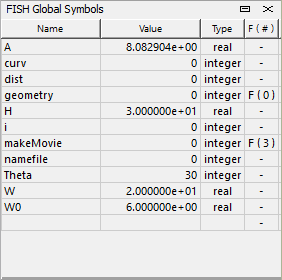
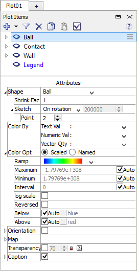
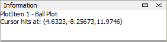
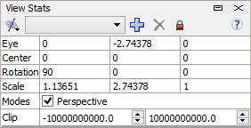
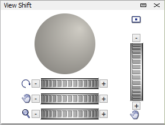

控件组
控制面板中填充的是控制集。它们是出现在面板中、提供特定功能的“框”。控制集的大小会自动调整，不支持用鼠标拖动调整其尺寸。不过，可以按下文所述隐藏、定位以及隐藏和显示它们。
所有控制集均支持以下操作。
显示
使用  按钮（工具栏右端）可将一个控制集放入控制面板。可用控制集的列表显示在该按钮菜单上——只列出与当前活动窗格相关的控制集。当前已加载到控制面板中的控制集在菜单上会显示为勾选状态。
按钮（工具栏右端）可将一个控制集放入控制面板。可用控制集的列表显示在该按钮菜单上——只列出与当前活动窗格相关的控制集。当前已加载到控制面板中的控制集在菜单上会显示为勾选状态。
关闭
使用控制集标题栏右上端的关闭按钮（）。
最小化/还原
使用位于控制集右上侧、关闭按钮旁的最小化/还原切换按钮（ 和 ）。
和 ）。
重新定位
将鼠标置于要移动的控制集的标题栏上，单击并向上或向下拖动。松开鼠标时，控制集将定位到当前高亮显示的水平分隔线处。控制集按自上而下的方式加载到控制面板中，因此另一种定位方法是：关闭所有可见的控制集，然后按所需顺序重新加载它们。
控制集图库
为便于参考，下面展示了每个控制集的图像，并注明哪些窗格可使该控制集可用，以及在本手册中何处可找到有关其用法的信息。
FISH 全局符号

带有 i 图标的FISH 全局符号（FISH Global Symbols）控制集以只读方式显示程序中所有全局作用域的FISH符号（变量或函数）。它对所有窗格类型（pane type）均可用。该控制集的用法在项目窗格的说明中一并介绍，该说明位于程序机制（Program Mechanics）中关于项目（Projects）的一节。
绘图项

带有 i 图标的绘图项（Plot Items）控制集提供用于构建和操作代码绘图的控件。它仅可用于绘图窗格。该控制集功能繁多，全部内容在程序机制（Program Mechanics）的绘图（Plotting）一节中介绍。
信息

带有 i 图标的信息（Information）控制集提供当前窗格中鼠标位置的相关情境信息（鼠标下的对象项、对象属性、鼠标位置等）。它仅用于模型的可视化表示，因此可用于绘图、拉伸、构建块和模型窗格（后三者为 FLAC3D 特有）。该控制集在程序机制（Program Mechanics）的绘图（Plotting）一节中介绍。
视图统计

带有 i 图标的视图统计（View Stats）控制集提供当前视图状态的获取/设置信息（放大率、旋转、视图锁定等）。它仅用于模型的可视化表示，因此可用于绘图、拉伸、构建块和模型窗格（后三者为 FLAC3D 特有）。该控制集在程序机制（Program Mechanics）的绘图（Plotting）一节中介绍。
视图平移

带有 i 图标的视图平移（View Shift）控制集提供用于操作绘图当前视图的控件（放大、旋转、平移、重置等）。它仅用于模型的可视化表示，因此可用于绘图、拉伸、构建块和模型窗格（后三者为 FLAC3D 特有）。该控制集在程序机制（Program Mechanics）的绘图（Plotting）一节中介绍。
| 这些内容对您有帮助吗？… | FLAC3D © 2019, Itasca | 原文更新于 2020 年 10 月 8 日 |